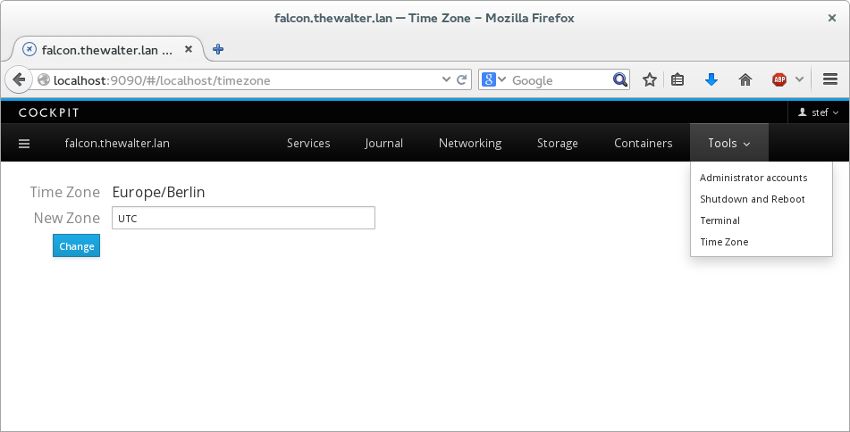

Note: This post has been updated for changes in Cockpit 0.90 and later.
Cockpit is a user interface for servers. As we covered in the last tutorial you can add user interface component to Cockpit, and build your own parts of the Server UI.
Much of Cockpit interacts with the server using DBus. We have a powerful yet simple API for doing that, and you should use DBus too when building your own Cockpit user interfaces. For this tutorial you’ll need at least Cockpit 0.41. A few tweaks landed in that release to solve a couple rough edges we had in our DBus support. You can install it in Fedora 21 or build it from git.
Here we’ll make a package called zoner which lets you set the time zone of your server. We use the systemd timedated DBus API to do actually switch time zones.
I’ve prepared the zoner package here. It’s just two files. To download them and extract to your current directory, and installs it as a Cockpit package:
$ wget http://cockpit-project.org/files/zoner.tgz -O - | tar -xzf -
$ cd zoner/
$ mkdir -p ~/.local/share/cockpit
$ ln -snf $PWD ~/.local/share/cockpit/zoner
Previously we talked about how packages are installed, and what manifest.json does so I won’t repeat myself here. But to make sure the above worked correctly, you can run the following command. You should see zoner listed in the output:
$ cockpit-bridge --packages
...
zoner: .../.local/share/cockpit/zoner
...
If you’re logged into Cockpit on this machine, first log out. And log in again. Make sure to log into Cockpit with your current user name, since you installed the package in your home directory. You should now see a new item in the Tools menu called Time Zone:

Try it out by typing Australia/Tasmania in the box, and clicking Change. You should see that the Time Zone changes. You can verify this by typing the following on the same server in a terminal:
$ date
Sa 15. Nov 01:48:01 AEDT 2014
Try typing an invalid timezone like blah, and you’ll see an error message displayed. Now try changing the timezone from the terminal using the timedatectl command while you have Cockpit open displaying your Time Zone screen:
$ sudo timedatectl set-timezone UTC
You should see your timezone on your screen update immediately to reflect the new state of the server. So how does this work? Lets take a look at the zoner HTML:
<head>
<title>Time Zone</title>
<meta charset="utf-8">
<link href="../base1/cockpit.css" type="text/css" rel="stylesheet">
<script src="../base1/jquery.js"></script>
<script src="../base1/cockpit.js"></script>
</head>
<body>
<div class="container-fluid" style='max-width: 400px'>
<table class="cockpit-form-table">
<tr>
<td>Time Zone</td>
<td><span id="current"></span></td>
</tr>
<tr>
<td>New Zone</td>
<td><input class="form-control" id="new" value="UTC"></td>
</tr>
<tr>
<td><button class="btn btn-default btn-primary" id="change">Change</button></td>
<td><span id="failure"></span></td>
</tr>
</table>
</div>
<script>
var input = $("#new");
var current = $("#current");
var failure = $("#failure");
$("#change").on("click", change_zone);
var service = cockpit.dbus('org.freedesktop.timedate1');
var timedate = service.proxy();
$(timedate).on("changed", display_zone);
function display_zone() {
current.text(timedate.Timezone);
}
function change_zone() {
var call = timedate.SetTimezone(input.val(), true);
call.fail(change_fail);
failure.empty();
}
function change_fail(err) {
failure.text(err.message);
}
</script>
</body>
</html>
First we include jquery.js and cockpit.js. cockpit.js defines the basic API for interacting with the system, as well as Cockpit itself. You can find detailed documentation here.
<script src="../base1/jquery.js"></script>
<script src="../base1/cockpit.js"></script>
We also include the cockpit.css file to make sure the look of our tool matches that of Cockpit. The HTML is pretty basic, defining a little form where the current timezone is shown, a field to type an address, a button to click change to a new one, and an area to show errors.
In the javascript code, first we get a bunch of variables pointing to the HTML elements we want to interact with.
Next we attach a handler to the Change button so that the change_zone() function is called when it is clicked.
$("#change").on("click", change_zone);
Next we connect to the timedated DBus service using the cockpit.dbus() function:
var service = cockpit.dbus('org.freedesktop.timedate1');
Now we make a proxy which represents a particular DBus interface containing methods and properties. Simple services have only one interface. When more than one interface or instance of that interface is present, there are additional arguments to the .proxy() method that you can specify.
var timedate = service.proxy();
Each interface proxy has a "changed" event we can connect to. When properties on the proxy change, or are received for the first time, this event is fired. We use this to call our display_zone() function and update the display of the current time zone:
$(timedate).on("changed", display_zone);
Timezone is a property on the timedated DBus interface. We can access these properties directly, and the proxy will keep them up to date. Here we use the property to update our display of the current time zone:
function display_zone() {
current.text(timedate.Timezone);
}
SetTimezone is a method on the timedated DBus interface interface, and we can invoke it directly as we would a javascript function. In this case we pass the arguments the DBus method expects, a timezone string, and a user_interaction boolean.
function change_zone() {
var call = timedate.SetTimezone(input.val(), true);
In a web browser you cannot block and wait until a method call completes. Anything that doesn’t happen instantaneously gets its results reported back to you by means of callback handlers. jQuery has a standard interface called a promise. You add handlers by calling the .done() or .fail() methods and registering callbacks.
call.fail(change_fail);
failure.empty();
}
The change_fail() displays any failures that happen. In this case, SetTimezone DBus method has no return value, however if there were, we could use something like call.done(myhandler) to register a handler to receive them.
Notice that we relied on DBus to tell us when things changed and just updated the display from our event handler. That way we reacted both when the time zone changed due to an action in Cockpit, as well as an action on the server.
Again this is a simple example, but I hope it will whet your appetite to what Cockpit can do with DBus. Obviously you can also do signal handling, working with return values from methods, tracking all instances of a given interface, and other stuff you would expect to do as a DBus client.